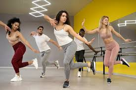

Ejercicio
Ejercicio: Mi fuente de energía diaria Hace algún tiempo decidí dejar el gimnasio, pero mi interés por mantenerme activa no desapareció. Ahora disfruto al máximo salir a correr, sentir el aire fresco y la libertad en cada paso. Además, zumba se ha convertido en mi rutina diaria favorita: una combinación perfecta de música, baile y ejercicio que me llena de energía y alegría. Es mi momento para desconectarme del estrés y concentrarme en cuidar de mi cuerpo y mente. ¡Cada día es una nueva oportunidad para moverme y disfrutarlo al máximo!